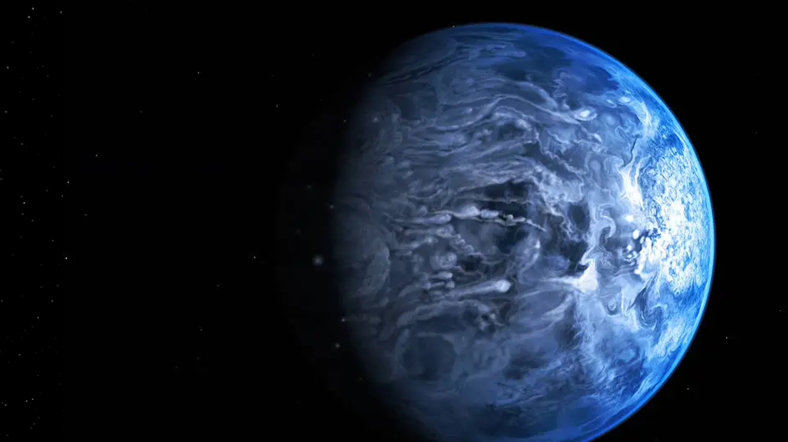

8 min read
HD 189733b, a planet that challenges the bounds of our imagination, is one of the most extraordinary exoplanets discovered to date. Located 64.5 light-years away in the constellation Vulpecula, this gas giant orbits its host star, HD 189733A, every 2.2 Earth days.
Its proximity to its star and the intensity of its atmosphere contribute to extreme conditions that are unlike anything found within our solar system. Discovered in 2005, HD 189733b became an instant subject of fascination among astronomers due to its deep azure blue color, reminiscent of Earth's from space, yet its similarities with our home planet end there.
The striking blue hue of HD 189733b, as observed by the Hubble Space Telescope, is not due to vast oceans or serene skies but rather to a turbulent atmosphere filled with silicate particles. These particles scatter blue light, giving the planet its unique coloration. However, this serene appearance belies the planet's hostile conditions. With winds reaching speeds of up to 7,000 kilometers per hour and temperatures soaring above 1,000 degrees Celsius, HD 189733b is anything but habitable by Earth standards. The blue skies, instead of signifying tranquility, hint at a world of extreme dynamism and complexity.
The insights into HD 189733b's atmosphere and weather patterns have been made possible through advanced telescopic observations and technologies, including spectroscopy. By analyzing the light spectrum emitted and absorbed by the planet's atmosphere, scientists can deduce its composition, temperature, and even weather phenomena. These studies have revealed the presence of water vapor and methane in the atmosphere, alongside the silicate clouds, offering a glimpse into the chemical processes that govern this alien world. Such observations are critical in expanding our understanding of planetary systems and the vast array of conditions they can exhibit.
Identified by the Hubble Space Telescope in 2005
Completes an orbit around its star in about 2.2 Earth days.
With a radius about 1.14 times that of Jupiter's
64.5 light-years away in the constellation Vulpecula.
Perhaps the most fascinating aspect of HD 189733b is its weather. The planet experiences what can only be described as a "rain of glass," a concept that sounds like science fiction yet is a reality on this distant world. The high temperatures and ferocious winds allow silicate particles to condense into glass-like shards, which are then whipped across the planet's surface at unimaginable speeds. This phenomenon creates a hellish landscape, where day-side temperatures are high enough to melt silicates into raindrops, and the planet's rotation exposes these elements to the extreme cold of the night side, solidifying them into glass. The exploration of HD 189733b transcends the mere fascination with an alien world; it represents a broader quest for knowledge and understanding in the vast expanse of the universe. Each discovery peels back a layer of mystery, revealing not only the complexities of distant planets but also the underlying principles that govern the cosmos. As we delve deeper into the secrets of planets like HD 189733b, we edge closer to answering some of the most profound questions about the nature of the universe and our place within it. The study of such extreme and exotic worlds expands our perspective, reminding us of the incredible diversity of the cosmos and inspiring us to continue our search for knowledge beyond the boundaries of our own planet.